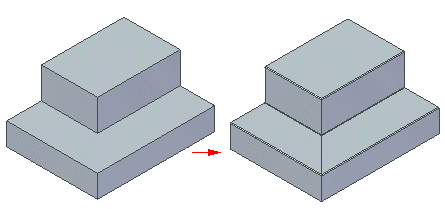
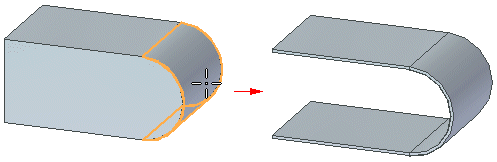

Part to Sheet Metal command
Use the Part to Sheet Metal command to convert an ordered part model to an ordered sheet metal body that you can flatten.
You can define the sheet metal bends by selecting linear edges.

You can also define the sheet metal bends by selecting a partially cylindrical face on the part model.

The tabs for the sheet metal document are defined by the bend edges.
Defining bend and corner parameters
When you convert a part model to sheet metal, you can use the Part to Sheet Metal Options dialog box to define parameters for all bend and corners created in the sheet metal part. Once converted, you can select bends and corners and override the value that you defined when you created the sheet metal part.
Ripping edges
When you convert a part to sheet metal, faces are automatically ripped and rip edges are defined from the bend edges. You can also press R while converting the part to define rips along selected lines and vertex pairs.
Consuming input body
When you convert a part to sheet metal, you can use the Keep Body option on the Part to Sheet Metal Options dialog box to either retain or consume the input body during the conversion.
How do I
Convert a part to sheet metalOverride the corner treatment
Override the bend values
Transform a document to a synchronous sheet metal part
Transform a sheet metal part
Rip a corner of a sheet metal part
Learn more
Converting part documents to sheet metalLook up more details
Part to Sheet Metal Options dialog boxThin Part to Synchronous Sheet Metal command
Thin Part to Synchronous Sheet Metal command bar
Thin Part to Sheet Metal command
Thin Part to Sheet Metal command bar
Thin Part to Sheet Metal Options dialog box
Rip Corner command
Rip Corner command bar